01 / LIGHTING TD · LOOK DEVELOPMENT
Venator Above
Coruscant.
A warm sunset, a readable starship silhouette and a city planet that gives the frame its scale.
Single-frame CG study · frame 1113 · 1920 × 810

/ VIDEO BREAKDOWN
From diagnostic passes to the final shot.
The expanded breakdown walks through the model, material, shot-lighting, fill, planet and compositing stages of this frame.
/ THE FRAME
Control the contrast without losing the ship.
A lighting, look development and compositing study of a Venator above Coruscant. The goal was a warm sunset that preserves the ship's red paint and ivory panel detail, with deep but readable shadows and a planetary city that supports the scale of the frame.
My work covers the frame's lighting, material response, RenderMan passes and final Nuke integration. The staged images below make each decision visible, from neutral diagnostics to the finished color treatment.
01 / BREAKDOWN
Model and materials.
The clay views reveal the silhouette, bridges, recesses and modeled detail. Evaluated material inputs then show how base color and roughness shape the ship's response. The neutral clay is a diagnostic view; the lit clay uses the shot's lighting rig.
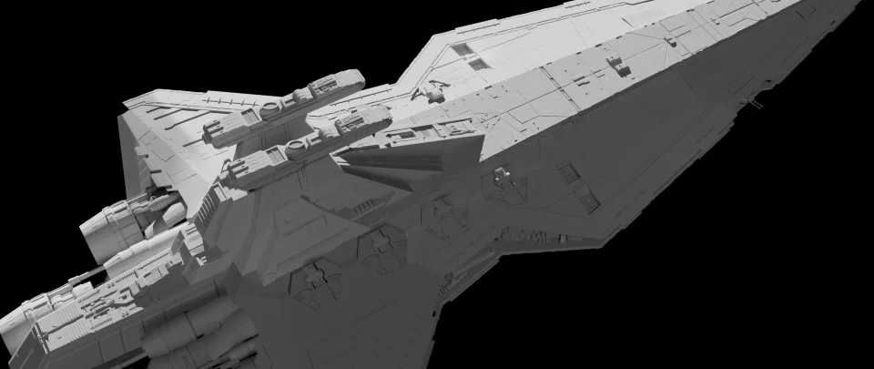
Neutral clay
Neutral clay: silhouette and modeled detail.
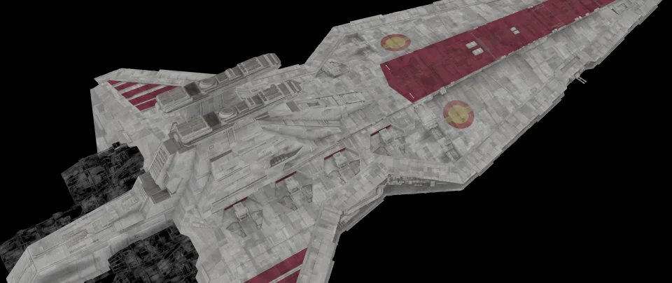
Base color
Evaluated shader base color, without lighting.
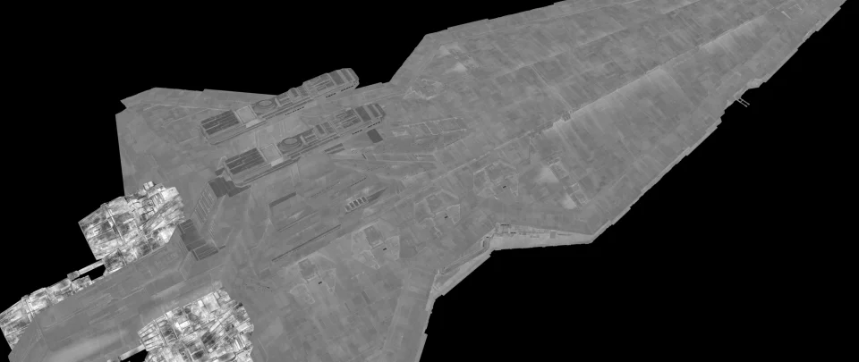
Specular roughness
Evaluated specular roughness across the geometry.
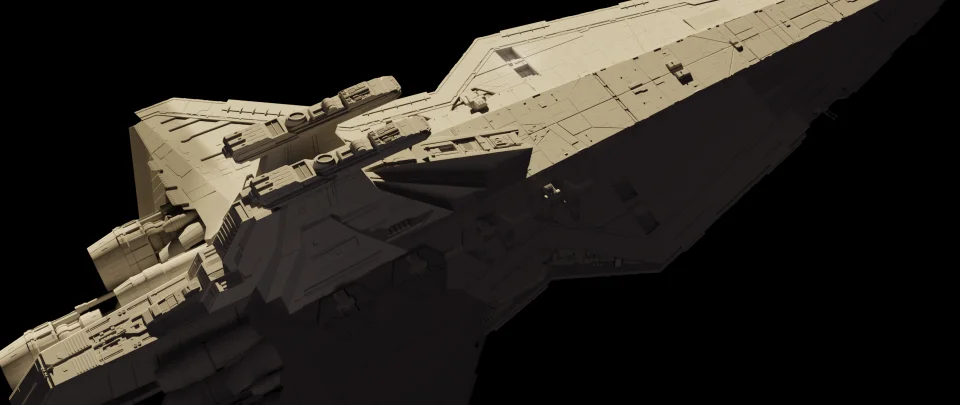
Clay under shot lighting
Gray material under the shot's lighting and shadows.
02 / BREAKDOWN
Lighting and shadows.
A warm sun from the upper left establishes the shape. Fill light supports shadowed planes, while local bounces separate the deck recess and right hull. Light filters reduce illumination around the aft engine without flattening the entire ship. Diffuse and specular passes show the material response.
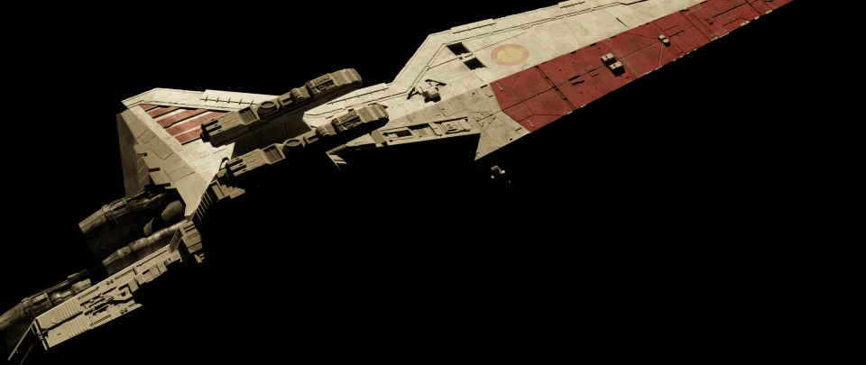
Sun key
Isolated contribution from the main sun.
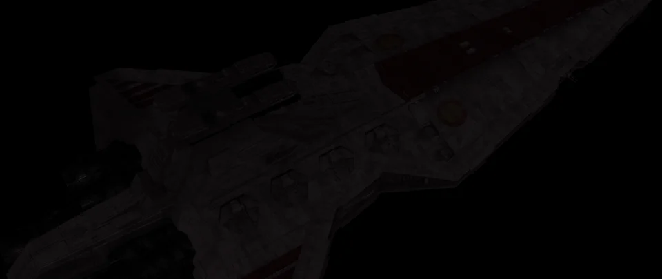
Directional fill
Directional fill at the shot's actual exposure.
Deck bounce
Local bounce within the deck recess.
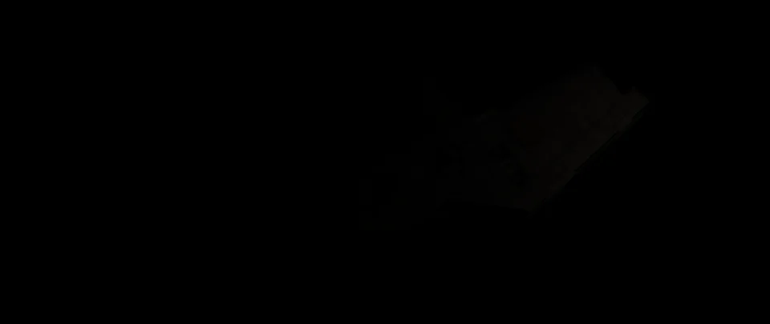
Right-hull bounce
Subtle bounce separating the right hull.
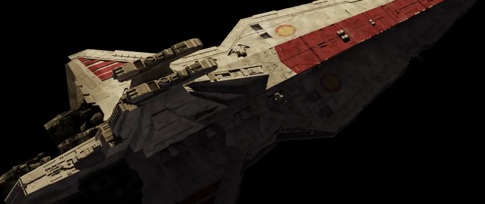
Diffuse contribution
Ship diffuse response.
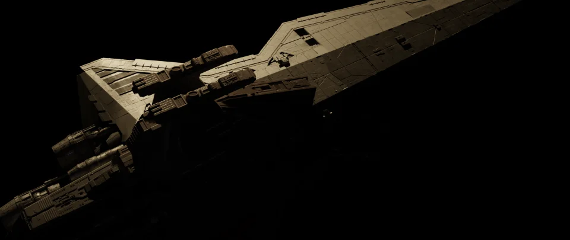
Specular contribution
Specular material response and reflections.
03 / BREAKDOWN
Planet and atmosphere.
Coruscant was rendered as a ship-free plate to inspect the city scale and light direction. City emission remains separate from the planet surface. A scene-anchored atmospheric shell creates the peach-to-plum transition and reduces contrast toward the sun.
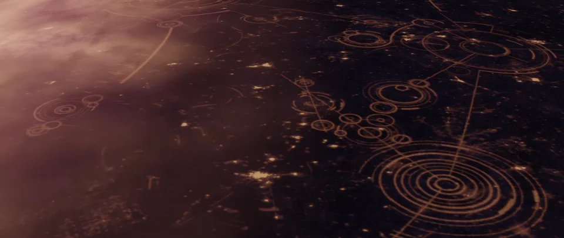
Coruscant plate
Complete Coruscant plate rendered without the ship.
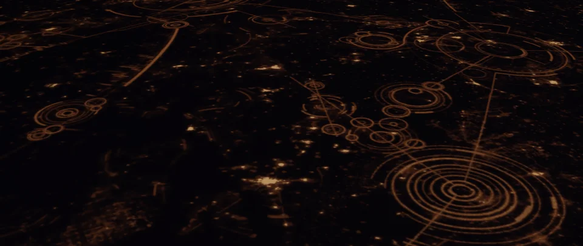
City emission
City emission isolated from the planet.
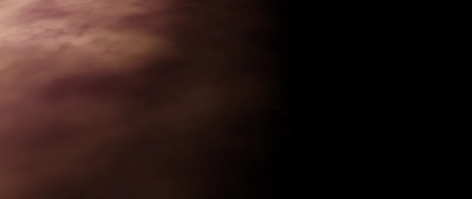
Atmospheric shell
Isolated atmospheric-shell contribution.
04 / BREAKDOWN
Compositing and color.
Nuke combines the ship, planet, cloud and haze contributions in linear space. The clean master uses −0.35 stops and Filmic / Medium High Contrast / sRGB. The final version adds a restrained glow to the brightest city lights. Version 13 shows how the deck recess and aft engine changed.
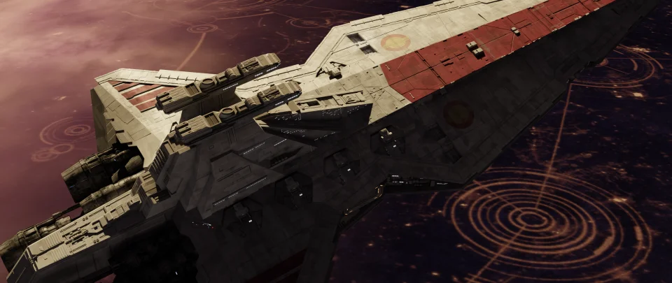
Clean master
Clean master: Filmic, without added optical effects.
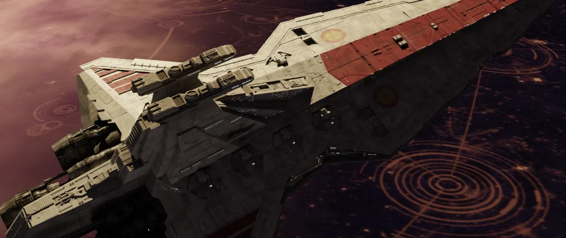
Earlier lighting
Version 13, before the local lighting adjustments in v14.
/ FINAL FINISH
Keep the glow selective.
The clean master retains the red and ivory panel detail, while a restrained bloom emphasizes only the brightest city lights. The cover above uses the final shot shown at the end of the video breakdown.
Spaceship
LIGHTING TD / COMPOSITOR / TECHNICAL ARTIST